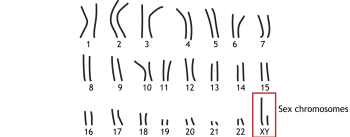
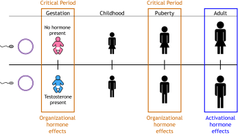
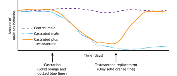

6.2: Sexual Differentiation
Sexual differentiation is the process by which a person develops into either a male or a female. For this chapter, the content will be based on a male/female binary to introduce the basic concepts of reproductive development. However, it is important to recognize that in real life, chromosomal sex, physical sex, and gender exist on a continuum and cannot always be simplified into a two-structure system.
During development, the body and the brain undergo A) feminization and de-masculinization or B) masculinization and de-feminization. In most cases, the differentiated brain will lead to behaviors that correspond appropriately to the differentiated gonads.
Chromosomal Sex
In humans, DNA is organized into 46 chromosomes—23 from the mother and 23 from the father. Twenty-two pairs are autosomal chromosomes, containing the same genes but potentially different alleles from each parent. The last pair are the sex chromosomes, X or Y, which determine biological sex (Figure 3). During fertilization, an egg (always one X chromosome) fuses with a sperm (one X or Y chromosome). An XX combination results in a female fetus, while XY results in a male fetus.

Gonadal Differentiation
Six weeks after fertilization, fetuses have primordial gonads that could develop into testes or ovaries, as well as Wolfian ducts and Müllerian ducts that could develop into male or female reproductive organs, respectively. Proteins and hormones released over the following weeks lead to differentiation into male or female anatomy. In males, the sex-determining region (SRY) gene on the Y chromosome is activated, producing testis-determining factor, which results in the gonads becoming testes and testosterone secretion. In females, when the SRY gene and secreted hormones are absent, the gonads differentiate into the ovaries.
Hormones During Development
In addition to differentiating the reproductive organs, the presence or absence of gonadal hormones during development also differentiates the rest of the body, including the brain. Testosterone causes the brain, body, and behavior to be masculinized and defeminized (Figure 4). The inactive ovaries do not release hormones; this causes the brain, body, and behavior to be feminized and demasculinized. Extensive research has established these principles in non-human animals. While hypothesized to extend to human brain and behavior, the evidence in humans is less conclusive.
Critical Period. Secreted testosterone’s effects on the brain must take place during a specific time in development, called a critical period. This early role of testosterone is called an organizational effect and results in a permanent change in organizing the nervous system and therefore behavior. Organizational effects of hormones lead to major, generally irreversible, aspects of cell and tissue differentiation. Organizational effects occur during critical periods like prenatal development and puberty (Figure 5). During puberty, higher levels of androgens in males lead to masculinizing organization, while ovarian hormone exposure has organizational effects in females (Schulz et al., 2009). In cases of pre-puberty castration, sexual maturation does not occur unless hormone replacement is provided.
In adulthood, the same hormones activate responses like inducing reproductive behavior or ovulation, but these influences, called activational effects, are reversible and short-lived. Removing the activating hormone stops the behavior, but reintroducing the hormone later restarts the response. This occurs because the brain was previously organized to produce these behaviors in the presence of hormones.

The role of activational hormones can be demonstrated by adult castration in male rats. Healthy males with intact testes will show sexual behavior when placed with a female rat. Castration, the removal of the testes, will cause males to stop showing sexual behavior because the activating hormone, testosterone, is no longer present. However, if the castrated males receive testosterone replacement, they will resume showing sexual behavior. The sexual behavior brain circuit was organized during development by exposure to gonadal hormones, and in adulthood that circuit can be activated by testosterone. The adult behavior can only be seen when the activating hormone is present (Figure 6).

Key Takeaways
- During development, the body and the brain undergo either A) feminization and de-masculinization or B) masculinization and de-feminization.
- The sex chromosomes, X and Y, make up one pair of the 23 total pairs of chromosomes in humans. Females are genetically XX and males are genetically XY.
- The SRY gene on the Y chromosome is responsible for the development of the male reproductive system.
- In the absence of hormones, the female reproductive system develops.
- Organizational, long-lasting hormone effects take place during critical periods in development.
- Activational, short-lasting hormone effects “activate” the circuits organized by hormones in development.
Text Attributions
Section adapted from:
Henley, C. (2021). Foundations of Neuroscience: Open Edition. https://openbooks.lib.msu.edu/neuroscience/chapter/sexual-differentiation/ CC BY-NC-SA 4.0
Media Attributions
- Chromosomes © Casey Henley is licensed under a CC BY-NC-SA (Attribution NonCommercial ShareAlike) license
- Developmental Hormones © Casey Henley is licensed under a CC BY-NC-SA (Attribution NonCommercial ShareAlike) license
- Organizational vs. Activational © Casey Henley is licensed under a CC BY-NC-SA (Attribution NonCommercial ShareAlike) license
- Castration Effects © Casey Henley is licensed under a CC BY-NC-SA (Attribution NonCommercial ShareAlike) license
The process by which individuals develop the characteristics associated with being male or female. Differential exposure to gonadal steroids during early development causes sexual differentiation of several structures including the brain.
Early, generally irreversible, effects of steroid hormones that occur during development
Physiological and behavioral responses that are reversible and short-lived, occurring in adulthood